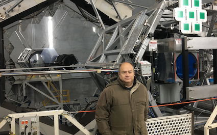
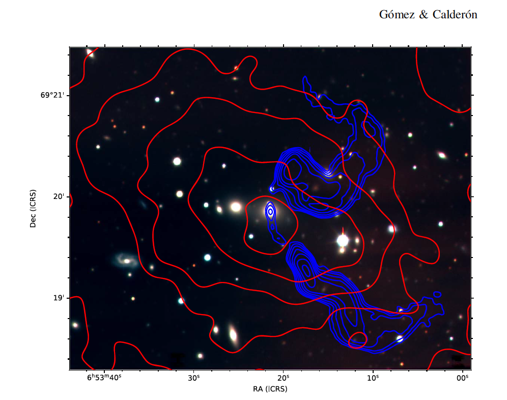

About Me

Education:
- New Mexico State University (PhD in Astronomy)
- New Mexico State University (MsC in Astronomy)
- University of Alabama at Birmingham (MsC in Physics)
- Potificia Universidad Catolica del Peru (BsC in Physics)
Research Interests:
- Merger and Evolution of Galaxy Clusters
- Evolution of Massive Galaxies and Bright Cluster Galaxies (BCGs)
- Origin of Tailed Radio Sources (NATs and WATs)
- Optical and Near-IR Instrumentation
Publications: Info
Research

Characterization of Tailed Radio Sources
Study of the physics and dynamics of Wide-Angle Tailed (WAT) and Narrow-Angle Tailed (NAT) radio sources.
Properties of Bright Cluster Galaxies (BCGs)
Evolution and Star Formation history of BCGs.
Massive Galaxies at z>3
Evolution and Star Formation history of Quiescent and Starforming Galaxies at z>3
Physics of Galaxy Cluster Mergers
Study the Effects of Mergers on th eproperties of the cluster components: intracluster gas (ICM), dark matter, and galaxies.
Contact
Email: pgomez at keck.hawaii.edu
Address: